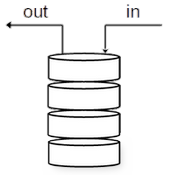
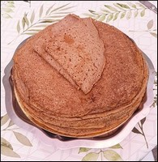

I. Les piles¶
Cours¶
A. Définitions¶

Qu'est-ce qu'une pile en informatique ?
Une pile est une structure de données, c'est-à-dire une manière de stocker, d'accéder et de manipuler des données. Elle fonctionne sur le principe du "dernier entré, premier sorti", en anglais "last in, first out" (LIFO).

Exemples de la vie quotidienne
les piles d'assiettes, de crêpes, de livres, etc.
Exemples en informatique
- la fonction "Défaire" ou "Undo" d'un logiciel de bureautique,
- la mémorisation des pages visitées dans un navigateur web.
Pour utiliser une telle structure dans un programme, il faut implémenter des fonctions de base qui correspondent à ce fonctionnement. On veut pouvoir :
- construire une nouvelle pile (vide),
- ajouter un élément à la pile : on empile un élément, qui se retrouve au-dessus des autres,
- enlever un élément à la pile : on dépile un élément, le dernier ajouté,
- tester si la pile est vide ou non.
B. Implémentation¶
On propose une implémentation de pile, utilisant la POO (ce qui n'était pas obligatoire !).
class Pile:
""" Définition d'une pile avec une liste Python """
def __init__(self):
"""..."""
self.L = []
def vide(self):
"""..."""
return self.L == []
def depiler(self):
"""..."""
# précondition à ajouter
return self.L.pop()
def empiler(self, x):
"""..."""
self.L.append(x)
- Ajouter la description des différentes méthodes (à associer aux fonctions de base décrite ci-dessus).
Solution
class Pile:
""" Définition d'une pile avec une liste Python """
def __init__(self):
"""Initialise une pile vide"""
self.L = []
def vide(self):
"""Teste si la pile est vide"""
return self.L == []
def depiler(self):
"""dépile, c'est-à-dire enlève le dernier élément de la pile"""
# précondition à ajouter
return self.L.pop()
def empiler(self, x):
"""Empile, c'est-à-dire ajoute un élément à la fin de la pile"""
self.L.append(x)
- Ajouter une assertion qui vérifiera une précondition sur les données d'entrée nécessaire au bon fonctionnement de
depiler.
Solution
def depiler(self):
"""dépile, c'est-à-dire enlève le dernier élément de la pile"""
assert(not(self.vide())) # précondition
return self.L.pop()
- Créer un objet de la classe
Pileet lui ajouter successivement les entiers 0, 1 et 2.
Solution
p = Pile()
p.empiler(0)
p.empiler(1)
p.empiler(2)
- Enlever le dernier élément de la pile. Avant de le faire, il faudra vérifier qu'elle n'est pas vide.
Solution
if not(p.vide()):
p.depiler()
Exercices¶
Exercice 1 : sur un logiciel de traitement de texte (sur feuille)¶
Un utilisateur de traitement de texte tape successivement les lettres suivantes : ‘v’, ‘i’, ‘v’, ‘e’, ‘n’ (étape 1). Il s’arrête et clique une fois sur « undo » (étape 2). Il continue : ‘ ’ (espace), ‘l’, ‘e’, ‘s’, ‘ ‘, ‘m’, ‘a’, ‘t’, ‘h’, ‘s’ (étape 3). Pris d’un doute, il change d’avis et clique 9 fois sur « undo » (étape 4). Il rectifie en tapant : ‘n’, ‘s’, ‘i’ (étape 5).
Dessiner les étapes 1 à 5 décrites ci-dessus en représentant le contenu de la pile stockant les caractères au fur et à mesure.
Exercice 2 : des crêpes trop goûtues (sur feuille d'abord)¶
Erwan invite des amis à manger des crêpes. Il les place les unes sur les autres sur une assiette. Il commence à en manger une pour goûter le résultat, et la trouve tellement bonne qu’il ne peut s’empêcher de manger les autres… jusqu’à la dernière.
En utilisant la classe Pile du cours, écrire une fonction vide_crepes qui prend en paramètre une pile de crêpes (pile_crepes) et la vide complètement. Cette fonction ne renvoie rien, mais l’instruction pile_crepe.vide() doit retourner True après son exécution.
Pour aller plus loin...
Comment cela se fait-il que l'on puisse modifier une variable dans une fonction, et récupérer cette valeur modifiée à l'extérieur ?
C'est une particularité de Python, c'est en fait l'adresse de la structure qui est passée en paramètre. Cela fonctionne pour les listes Python (et autres types composés), mais pas pour des variables de type int, str, bool.
Exercice 3 : les assiettes de la grand-mère (sur feuille d'abord)¶
Marion est à la recherche des assiettes qui lui viennent de sa grand-mère, qui sont rangées en bas d’une pile d’autres assiettes. Il faut qu’elle dépile cette dernière, jusqu’à trouver la première assiette de sa grand-mère. Elle se retrouve finalement avec deux piles d’assiettes.
En utilisant la classe Pile du cours, écrire une fonction separe_assiettes(pile_assiettes, elt) qui dépile pile_assiettes jusqu’à rencontrer l’assiette elt et empile les assiettes retirées dans une autre pile. La fonction retourne pile_assiettes modifiée, et la 2ème pile. Si les assiettes recherchées ne sont pas trouvées, la fonction ne retourne rien.
Exercice 4 : expressions bien parenthésées (sur ordinateur)¶
Nous voulons écrire une fonction qui contrôle si une expression mathématique, donnée sous forme d’une chaîne de caractères, est bien parenthésée : c’est- à-dire s’il y a autant de parenthèses ouvrantes que de fermantes, et qu’elles sont bien placées.
Exemple :
(..(..)..) est bien parenthésée.
(...(..(..)...) ne l’est pas.
Voici l’algorithme utilisé :
Notre expression est stockée dans une variable 'exp'
La sortie est stockée dans une variable 'parenthesee'
On crée une pile 'p'
Pour i variant de 0 à la longueur de exp-1
Si élément 'i' de 'exp' vaut "("
On empile "(" dans 'p'
Sinon si élément 'i' de exp vaut ")"
si 'p' non vide
on dépile 'p'
sinon
'parenthesee' vaut "Faux"
'parenthesee' vaut : 'p' est-elle vide ?
- Tester le code sur les expressions suivantes :
- \(((2+64)*2^8+5)\)
- \(10+((75-64)*4\)
Pour aller plus loin...
Faire en sorte que le programme tienne également compte des "[" en plus des "(".